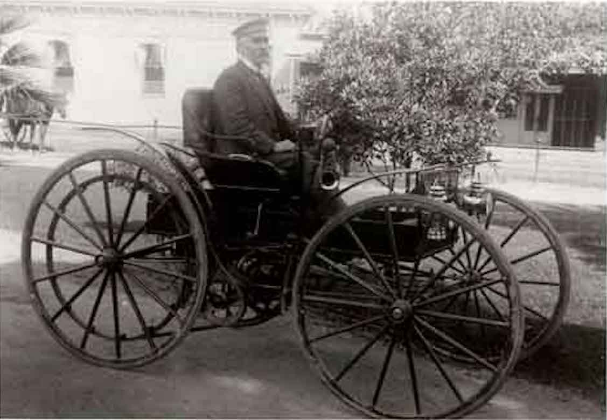
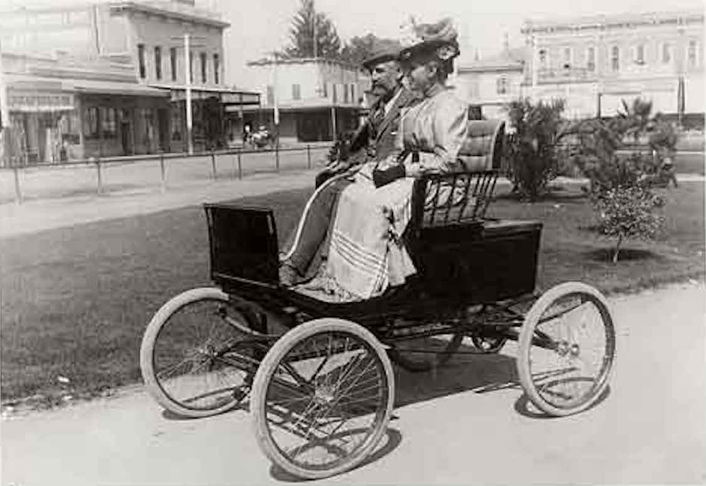
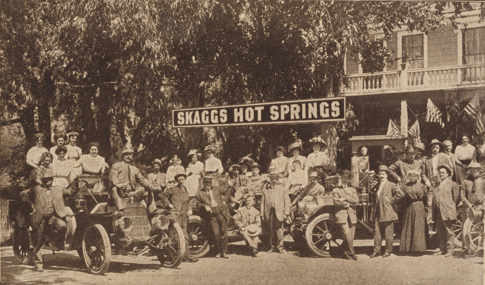
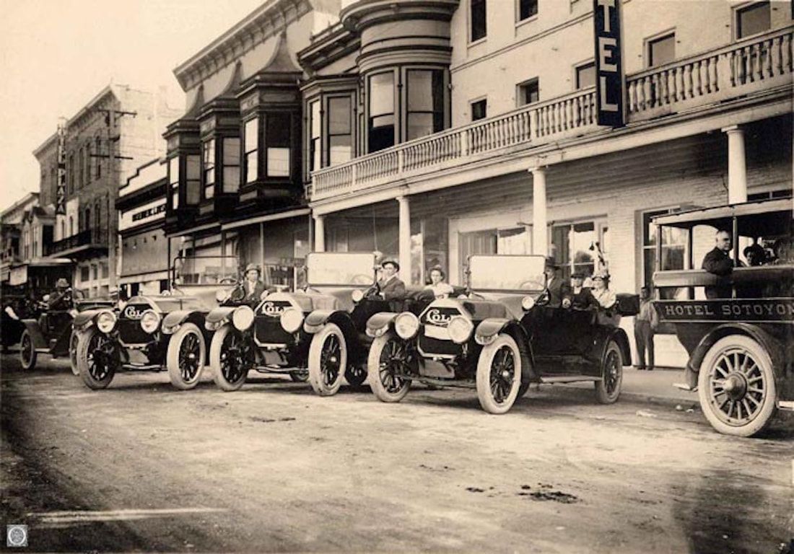
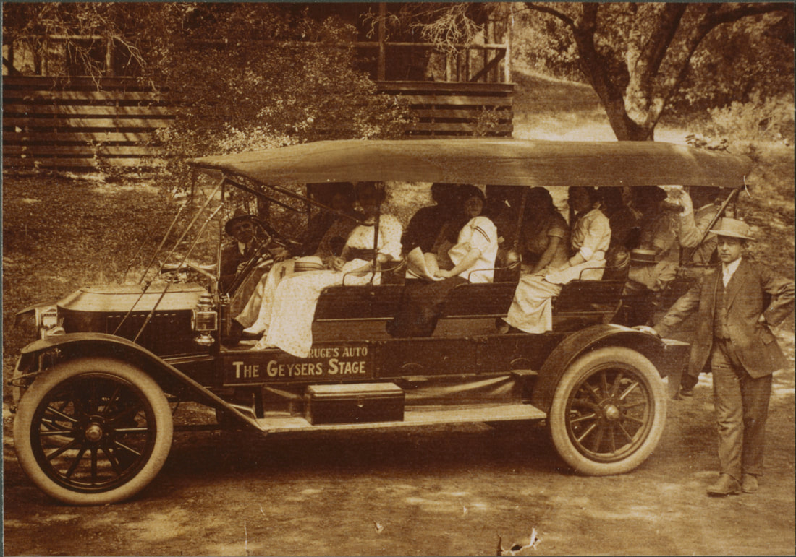
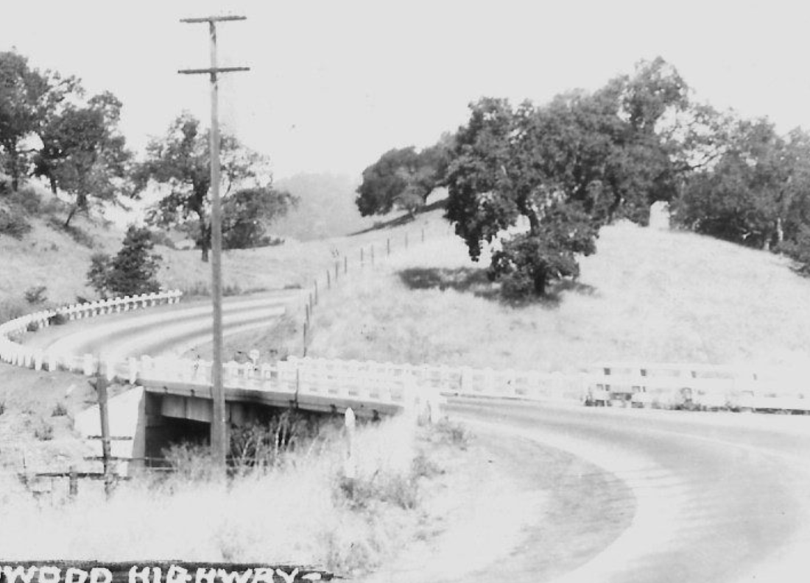
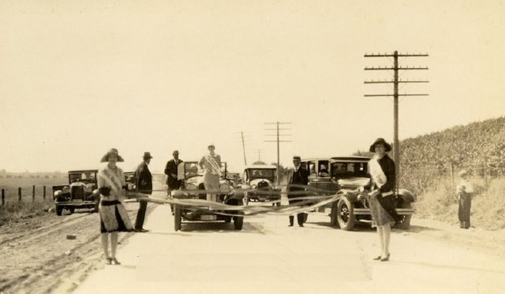
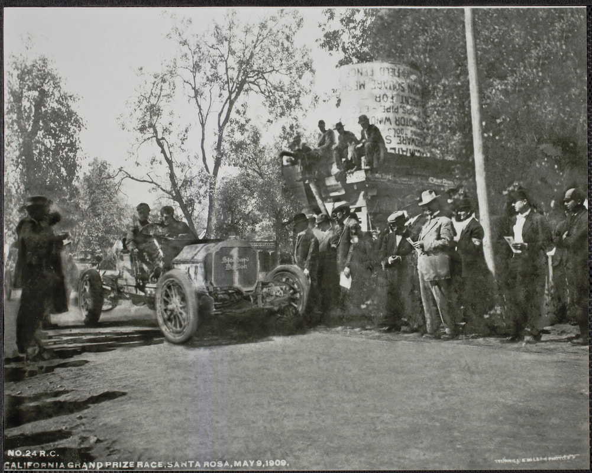
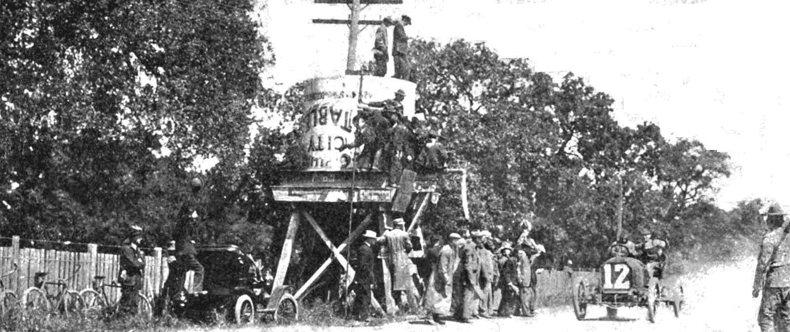

The Automobile and Healdsburg
© 2020 Hannah Clayborn All Rights Reserved
|
Oh, fateful day, July 15, 1900, that the citizens of Healdsburg could finally count among their ranks something marvelous—an automobile owner! The editor of the Healdsburg Tribune proudly declared that Healdsburg may now be said to be a strictly up-to-date town, because of the efforts of lumber mill owner, W. T. Albertson, who drove that first horseless carriage onto the dusty streets of the commercial center that sunny Sunday morning.(1)
Albertson purchased the four-horsepower Stanley (probably an 1898 or 1899 model) in San Francisco for $950. Manufactured in Newton, Massachusetts, the Stanley was powered by a steam engine, as were many of the earliest automobiles. Steam technology was then far ahead of gasoline technology, having evolved for decades in ships and tractors, and by the turn of the century steam engines were quite reliable. The autos carried water on board and the boiler was fired by kerosene type products that, unlike gasoline, were widely available at the time.(2) First Commute Just getting Healdsburg's first automobile home was a heroic feat. Mr. Albertson picked up the auto early one Saturday morning and crossed by ferry to Sausalito. Nervous ferry officials, having no experience with the machines, forced Mr. Albertson to empty his kerosene tank because it was flammable. Albertson was apparently able to get more of his kerosene mixture once he arrived in Marin County.(3) Starting out from Sausalito at 10 a.m. he, came up through Mill Valley and over very steep grades, which tested the capacity of the machine thoroughly and proved it to be of first class construction. But, like the early pioneers who went astray while crossing the mighty Sierras, this novice motorist soon lost himself on the way up and was compelled to stop overnight in Santa Rosa. When Mr. Albertson drove the car into town the next day citizens marveled at the machine, weighing 550 pounds with solid rubber tires measuring 28 inches in diameter. It was rumored that the buggy could propel itself up to forty miles per hour, but it was soon pointed out that local road conditions only supported a speed of 10 to 15 miles per hour.  W. T. Albertson proudly poses on the Healdsburg Plaza with the first mass-produced automobile to make it to Sonoma County, a Stanley Steamer, in 1900. (Healdsburg Museum)
Earliest Mass-produced Car in Sonoma County
The visionary Mr. Albertson believed that the marvelous machines would come into general use in the not too distant future. He was so certain, in fact, that he intended to fit his lumber mill for making repairs to such vehicles and to offer instruction in their care and manipulation.(4) Berenice Hansen, who later moved to Oakland, remembered the thrill of riding about the Healdsburg Plaza in that pioneer auto in 1900. My feet did not touch the floor and Mr. Albertson admonished me to hold on to the arm.(5) Albertson's car was the first mass-produced automobile to reach Sonoma County. There was a gas-powered machine, known as a Schelling, built by two bicycle mechanics in Santa Rosa in 1899. But the vehicle lacked brakes and it was stopped by disengaging the gears, sometimes a difficult task! Only two were built before the Schellings abandoned their design in 1901.(6) The Albertsons, who lived on Tucker Street in Healdsburg, soon traded in their pioneer Stanley Steamer for a 1902 Locomobile, also a steam-powered car, manufactured in Westborough, Massachusetts. They reportedly kept that vehicle in their garage for many years.(7) Yet it was only a matter of time before the distinctly mechanical sound of the automobile filled the streets and roads of northeastern Sonoma County. By 1907 cars were still a curiosity, and new owners were listed: attorney E. M. Norton bought a little "runabout"; Clem Mothorn purchased a "Maxwell Machine" which he entered in the Fruit Growers Automobile Association; Charles Sherriffs bought a Buick clocked at 28 m.p.h.!(8) And on July 25, 1907, the City Trustees found the proliferation of self-propelled vehicles warranted the setting of a maximum speed limit of 10 miles per hour (they had originally lobbied for an 8 m.p.h. limit).(9)  Like so many others who would follow, Mr. and Mrs. Albertson, seen here on the Plaza in 1902, felt the need to upgrade their wheels every couple of years. They traded in their Stanley Steamer for a Locomobile. (Healdsburg Museum)
Autoists Organize
Eight years after the first resident auto combusted its way into town, it had inspired enough brethren to cause the organization of the "Autoists", a club that could boast a county-wide membership of 200. On Sunday, June 14, 1908, a heavy traffic of horseless carriages warmed the highway on the way to Bosworth's Grove in Geyserville. Every variety of machine was represented, from the wheezy little out-of-date coffee grinder to the luxurious and noiseless seven passenger touring car. A reporter estimated the astounding worth of the assembled autos at $150,000. The daring travelers were greeted by an inspired oratory as the object of this first gathering was declared to be the: ...improving of the highways threading the county...not alone for automobiles, but for every traveler, footman, wagon, and bicycle...for the auto was not here to occupy the road alone, the horse had his rights to the highway and he should share the good road with the machine.(10) Such generous sentiment brought a round of applause from the humans present. Lacking a spokesman, history has not recorded the reaction of the horses who attended.  The Autoists of Sonoma County visit Skaggs Hot Springs Resort circa 1910. (from a brochure, Sonoma State University)
Parking Problems
Inevitably, the increase of autoists brought a parking problem to Healdsburg's downtown streets. In 1917 the City Trustees decided to adopt a parking plan then in use in Sacramento and other large cities. Cars were parked in a designated area in the middle of the street, thus clearing the spaces in front of business houses. Machines will be allowed to stand in front of business houses only a few minutes at a time, the Tribune explained to its readers.(11) It is uncertain how long this middle of the road parking plan was in effect. Despite the pioneering spirit of first local auto owner, W. T. Albertson, the City Fathers were certainly not in the forefront of automotive enthusiasm. It took almost two decades for the City Trustees to trade in the old municipal horse and wagon for an internal combustion engine. After lengthy consideration and much discussion concerning the efficiency of autos, city officials finally decided, in July, 1917, to buy a Ford for $487.70.(12)  The first autobuses brought passengers from the Healdsburg Railroad Depot to the Sotoyome Hotel on West Street. This photo appears to date from about 1912, before the Plaza streets were paved in 1913. (Healdsburg Museum)
The Auto Stage
First one, and then another, and another of the local folks dreamed of being the next one to own an automobile, so often referred to simply as a machine. And those who could not afford a machine of their own began to clamor for a county-wide autobus or autostage transportation system. The first autobus lines, successors of the colorful stagecoaches of another era, ran from the train depot to the Healdsburg hotels, and later from there to outlying resorts like Skaggs Springs and Litton Springs In 1913 R. W. Bruce and his dependable Stanley Steamer established the famous auto stage route to the Geysers.(13) With these bus lines and the increase of motorists venturing north from San Francisco, the tourist resort trade, in a slump since the 1880s, was revitalized. By far the most important bus line for residents was the Sonoma County Transportation Company's. Opening a Healdsburg to Santa Rosa route September 1, 1914, the line was extended to Cloverdale shortly after. The company started with 6 buses (4 were open to the sky) carrying 18 to 20 passengers each. Fare from Healdsburg to Santa Rosa was 80 cents round trip, and $1.00 from Healdsburg to Cloverdale round trip.(14) As rival bus lines appeared, the Tribune informed readers that the merchants of Healdsburg were all feeling the immediate benefits of the faster more convenient transportation system.(15) During the next half century Healdsburg's retail economy did benefit from every new bus line, every new car sold, and every new concrete or asphalt macadam roadway, because that roadway always brought people down their main street, then called West Street. Then, like an unpredictable waterway, the river of machines changed its course.  R. W. Bruce stands beside his autostage to the Geysers in 1909. (Sonoma County Library)
An Easy Day's Ride
Distances and the time it takes to travel them are an important historical determiner. Those first American settlers chose to stop in Dry Creek Valley and along Westside Road in the early 1850s in part because it was the most fertile land within a long day's wagon ride of the town of Sonoma. At that time Sonoma was the commercial center of the county and the nearest source of tools and supplies.(16) After the town of Healdsburg developed in the mid 1850s, it became the service and supply center for an area that stretched from Cloverdale to the north to Windsor in the south, from Knight's Valley in the east, all the way to the coast. Healdsburg's commercial core grew only as big as it needed to be in order to serve the farmers who could make it into town, do errands and shopping, and return in an easy day's ride. With an automobile that farmer's trip became much faster. For instance, a farmer living five miles up Westside Road could probably make it into Healdsburg in a Model T in under a half-hour. After Westside Road was paved in concrete in 1929, he could probably cut that time to 15 or 20 minutes.(17) But the trip to Santa Rosa was still an additional 40 minutes away on the busy, winding concrete Redwood Highway. Our farmer would make that hour-long trip only occasionally, when he or she needed to.  The Redwood Highway, just south of Healdsburg, in 1920. (Sonoma County Library)
The Redwood Highway
That is not to diminish the importance of the Redwood Highway, which was a major improvement in the early history of automotive travel to and through Sonoma County. It eventually stretched from the Marin side of the Golden Gate bridge northward through Marin, Sonoma, Mendocino, Humboldt, and Del Norte Counties of California, and Josephine County of southern Oregon. The first portion of that system built, in 1909, was a 15-foot wide strip of concrete from Ukiah south to Largo, a ten mile span. The section from Healdsburg to Santa Rosa was finished by the summer of 1914, and from Healdsburg north to Geyserville in 1920. Early construction was financed by state bond issues, and later by a gasoline tax. The two-lane, 450-mile long Redwood Highway and its subsequent improvements greatly increased traffic from San Francisco to points north. That flow was enlarged to full stream by the completion, in 1937, of the $35,000,000 Golden Gate Bridge.(18) These two major improvements brought more and more tourists to the North County and to Healdsburg, augmenting its economy, but Healdsburg still served as the day-to-day shopping center for its traditionally large service area.  The new Redwood Highway:
ribbon cutting for newly constructed highway between Santa Rosa and Healdsburg. The ceremony was performed by Miss Santa Rosa (Wilma Steiner), Miss Healdsburg (Vera Churchman), and Miss Redwood Highway (Bertha Knudsen ), August 7, 1926. (Sonoma County Museum)
The River Flows on by
Like a river that suddenly changes its course, the flow of commercial traffic to Healdsburg began to diminish after 1960. What happened in 1960 that would later so drastically effect retailing in Healdsburg? We call it a freeway. Although modern conditions can seldom be traced back to only one cause, the 101 freeway bypass had a considerable impact on local business. When the freeway opened in mid-November 1960, few citizens were able to predict the effect it would eventually have on Healdsburg retailing and restaurants. Each new road improvement to that time had only increased business. Organizing a group of 153 local school children, Healdsburg retailers in fact decorated their store windows to celebrate.(19) Those few who worried about the new freeway were mainly service station and restaurant owners along West Street, the old name for the main thoroughfare. Their small voices were lost in the clamor of anticipation sounded by a majority of residents, who would now enjoy this new convenience.(20) It must be remembered that Healdsburg in 1960, just as in 1860, was still very much an agricultural town. Retailing was a sidetrack of the main farming economy, and was developed mainly to serve that farming community. Tourism, although steadily increasing since the teens, was still a meager slice of the economic pie. City attorney J. A. Ratchford was quoted at official opening ceremonies of the freeway bypass in November, 1960: ...today the State of California...has bestowed upon our city the most beneficial annexation to our community that we have observed in the past ten years, The Healdsburg Freeway...The Department of Highways ..has complied with the majority of wishes of the citizens and businessmen of our community by annexing this freeway in the particular area where we believe it is most beneficial to our community. The thunder and noise of truck traffic over and through the main thoroughfare of our city is rapidly diminishing. Tomorrow it will be practically eliminated. The businessmen along our main street will, tomorrow, heave a deep sigh of relief, roll up their sleeves and commence to rebuild and revitalize "old" West Street into a new and thriving Healdsburg Ave.(21) Well, it did get noticeably quieter on the new Healdsburg Avenue, and within a short time some of those Healdsburg businessmen probably were sighing, but not with relief. The question for our hypothetical Westside Road farmer, and for tourists coming north from San Francisco, and even for Healdsburg residents now became: Why stop (or shop) here, when it is only 15 more minutes to Santa Rosa—or 25 more minutes to Cloverdale? Businesses that relied on the traffic, like hot dog and hamburger stands and restaurants, took the hit first. Due to ingrained buying habits and customer loyalty, some Healdsburg merchants were not immediately affected at all, but a creeping retail depression had begun, and soon almost all would feel it. Tribune editor Arnold Santucci might have had an inkling of Healdsburg's future, for the sentiments he expressed in a Jan. 5, 1961 editorial were repeated countless times after that: With the freeway open, it is more important than ever that Healdsburg is publicized to the fullest extent as a shopping center...the business people of the community must make extra effort to attract the shoppers from the outlying areas as well as the home folks who shop here. 1961: a Pivotal Year
It is more than a little eerie now to go back and look at that very important, very pivotal year in Healdsburg's history—1961. Aside from the opening of the new 101 freeway, the 1886 Healdsburg City Hall had just been demolished to make way for a new streamlined office complex. The Plaza was undergoing a complete re-landscaping plan. Although it would not be implemented for another two decades, planning decisions were made at that time that would result in the demolition of two blocks of cast-iron front buildings along the west side of West St., and the buildings surrounding the Plaza were also slated for demolition. It was the year that Healdsburg shrugged off the old, for good or ill, and embraced a new order. And if the town wanted to take a front seat in that new order, it would have to change its habits. Editor Santucci's "Blueprint for 1961" called for the following:
Memorial Beach did become a county park. A city museum was established in 1976. A cooperative downtown business association formed in the 1980s, and Healdsburg, by 2000, had become sort of a Flower Box City (prettified for tourists, that is). The downtown business interests that coalesced in the 1980s, that dominated City government, that spawned a local Redevelopment Agency, that for decades yearned for and solicited a large hotel, that led to the privatization of the city museum and other municipal functions that were not seen as tourist draws, that directed its economic focus like a laser on winery-related tourism in the next few decades, overcame that freeway bypass economic handicap by a Manhattan Mile. Healdsburg itself is now the destination. It would also make many long-time residents nostalgic for the days when they could park their machine on the Plaza at noon, eat at the diner with the redwood painting that was darkened by a quarter century of cooking grease, and then walk down an uncrowded street to buy underwear and a new outfit at bargain prices at Rosenberg & Bush Department Store.  Ben Noonan and J. W. Peters compete in the California Grand Prize Race held in Sonoma County. This photo appeared in the 20 May 1909 edition of “The Automobile” (Santa Rosa History, Jeff Elliot, 7 May 2012)
The Great Sonoma County Automobile Race  Ben Noonan approaches the finish line in Santa Rosa driving a Stoddard-Dayton after a 52-mile loop course from Santa Rosa to Healdsburg to Geyserville to Dry Creek Rd. and back to Santa Rosa on May 9, 1909. (Sonoma County Library)
Endnotes
1. Tribune 19 July 1900 (1:5). 2. Roger Morgan, Healdsburg, 1994, see Tribune 23 March 1994 (5:1). 3. Patricia Schmidt, Healdsburg, 1994; see Tribune 23 March 1994 (5:1). 4. Tribune 19 July 1900 (1:5). 5. Letters from Berenice Hansen, Oakland, California; 8 Jan. 1988; 23 Feb. 1994. 6. LeBaron, Gaye, Santa Rosa, A Twentieth Century Town; (Santa Rosa, Calif.: Historia Ltd., 1993) pgs. 20, 22. 7. Violet Wagers Van Winkle, Sausalito, late 1970's, see photos at Healdsburg Museum #227-151 & 152. 8. Tribune 20 June 1907 (2:1). 9. Tribune 25 July 1907 (1:2). 10. Tribune 18 June 1908 (1:1). 11. Tribune 29 March 1917 (1:3). 12. Tribune 10 May 1917 and 19 July 1917 (1:2). 13. Tribune 10 July 1913 (1:3); 2 Oct. 1913 (1:2) and (1:4); 29 Oct. 1914 ; 4 May 1916 (1:1); 28 Ded. 1916 (4:4). Enterprise 6 June 1914 (8:2). 14. Tribune 14 May 1914 (1:4); 6 Aug. 1914 (1:1); 29 Oct. 1914 ; 12 Nov. 1914 (1:6); Diamond Jubilee edition 26 Aug. 1940 p. 9. 15. Tribune 24 Dec. 1914 (1:1); 12 Nov. 1914 (1:6). 16. Hannah Clayborn, A Promised Land: Grantees, Squatters, and Speculators In the Healdsburg Land Wars, (M.A. Thesis, History: Sonoma State University, 1990) pg. 33. 17. Oral Communication, Robert Jones, Healdsburg, 1994. 18. Tribune 16 July 1914 (3:2), Diamond Jubilee edition 26 Aug. 1940 p. 9, 10, 30. Enterprise 28 Feb. 1920 (1:6). Ben Blow, California Highways, A Descriptive Record of Road Development by the State and by Such Counties as Have Paved Highways (S.F.: California State Automobile Assoc., 1920). 19. Tribune 27 Oct. 1960 (1:1). 20. Oral Interview, Arnold Santucci, Healdsburg, 1994. 21. Tribune 17 Nov. 1960 (1). 22. Tribune 5 Jan. 1961 (2:1). |